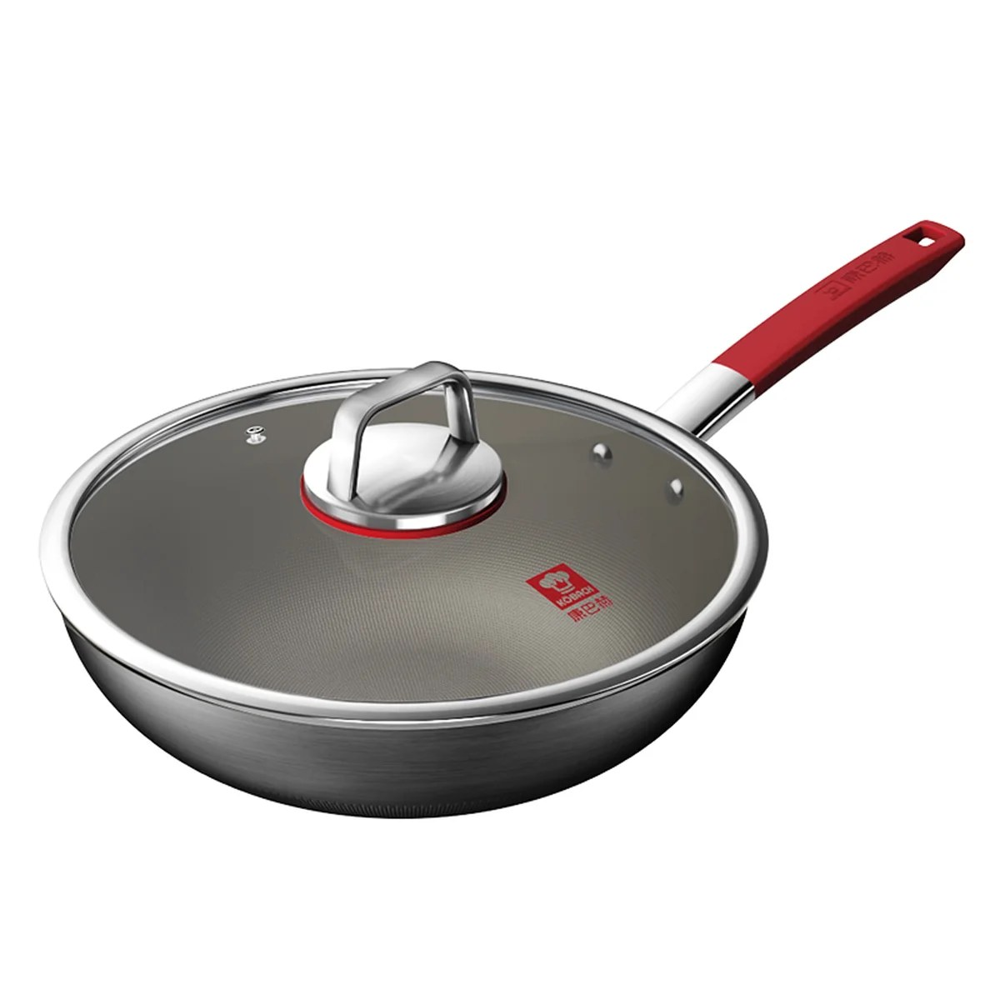

炒锅参考:臻三环档位与康巴赫纯钛炒锅
整理于 2026 年 10 月 24 日,价格以各条标注的日期为准
两部分:臻三环章丘铁锅的级别体系、国内每个档位的货架价和实际成交价;以及在 huarenstore 花 $129 买的康巴赫纯钛炒锅(KGT-C32A)的评价和价格核对。品牌宣传和独立证据分开标注,查不到的如实写明。
一、臻三环:先分清两条产品线
臻三环店里同时卖两种锅。铸铁"龟纹锅"是生铁水浇进泥模铸出来的,厚重、储热好、坐在灶上稳,适合煎炸炖煮;锅面天然龟裂纹是工艺痕迹,不是瑕疵。大家说的"章丘铁锅"是另一条线:手工锻打熟铁锅,整块熟铁板一锤一锤敲出来,通常烤蓝处理、泛蓝灰色光泽,轻、升温快,爆炒要锅气就靠这一类。冲着"手工锻打"去的,别下单成铸铁线——买错的真实纠纷已经有案例(砂眼漏水后被告知质保只有三个月)。
手工线的"一环、二环、三环"不是锅的型号,是锻打师傅的认证级别;锤数是工时;系列名"轻音 / 宗师"只是木柄铆接与铁柄一体锻打的区别。以上锤数和师傅级别来自店内"等级区别"说明牌实拍,属于品牌口径,没有独立检测。
背景
2018 年《舌尖上的中国 3》带火章丘铁锅,臻三环网店销量同比增长近 6000 倍。八年过去热度回落,但假货没断(2026 年 3 月还有媒体报道 1.8 万元买 10 口"章丘铁锅"全是假货)。下单顺序:先确认渠道正规,再确认材质线,最后才谈档位。
二、九个档位的国内货架价
1生铁龟纹·木把带耳 32/34cm¥358 / 388
铸铁浇铸,非手工锻打,全系最便宜。炖煮多、不怕重就选它,别为手工名头多花钱。
2一环·轻音(木柄)30/32/34cm¥375 / 419 / 439
约 1 万锤,普通师傅锻打,锅内能看到锤叠纹。轻,"女生能单手颠锅"是这档的真实卖点;新手开锅磨合期也主要在这档被吐槽。
3一环·宗师(铁柄)30/32/34cm¥469 / 479 / 489
约 1 万锤,普通师傅,铁柄一体锻打(轻音是木柄铆钉连接)。全表性价比锚点,三口之家主力灶选这档,买大不买小。
4一环·铁把款 28cm¥389
约 1 万锤,小尺寸。
5盛级(宗师/轻音)30/32cm¥789
约 2 万锤,二环师傅,锅沿首次出现师傅钢印,"锤纹看得到摸不到"。代购话术称锅体密度高、不易渗汤汁。
6袁师·宗师 32cm¥990
约 2.8 万锤,名匠档,锅内壁乌亮、几乎看不出锤叠纹。注意:三环宗师袁庆杰已退休封锤,这一档的补货是价梯上最大的稀缺变量。
7侯师·宗师 32cm¥1,299
约 3.2 万锤,名匠档。
8宋师·宗师 32cm¥1,599
约 3.6 万锤,名匠档。
9王玉海宗师(最高档)价目单未收录
约 3.6 万锤,章丘铁锅非遗锻打技艺传承人、《舌尖 3》拍摄师傅,店内说明牌称"锅如明镜"。两份代购价目单都没有这一档的价格。
价格是胖东来门店货架价:2026 年 8 月 19 日和 10 月 1 日两份互不相识的代购价目单交叉核对一致。胖东来线下不打折,这就是全网各档位的底价锚点。来源:什么值得买社区媒体整理(见文末来源)。
789 元以上买的是什么
按社区媒体对晒单的整理:789 元以上买的是"人和字号",即名匠稀缺产能,炒菜体验并不发生质变——600-700 元的轻量款一样被吐槽过粘锅,3 万锤的锅也有"锅盖盖不上被退回"的;反过来,用到第五年的轻音用户和用六年龟纹锅的用户同样真实。锤数决定致密的上限,决定不了你和这口锅的磨合,后者是灶、油温和耐心的事。
三、挂牌价 vs 实际成交价
- 天猫宗师 30cm
- 挂牌 ¥598,常卖价 ¥478,2026 年 9 月券后成交 ¥453(什么值得买爆料)
- 淘宝盛泽 32cm 名匠锅
- 页面挂 ¥960+,有用户叠淘金币、店铺充值、返利、88 券后实付 ¥655(晒单)
- 618 "2万锤"锅
- 2026 年 618 订单实付 ¥576.55(用户晒订单截图;评论区另有"胖东来买的 789""我家买的才四百多""今天京东 255",档位各自说不清)
- 双11名匠线"直降700"
- 若宋师 ¥1,599 降到 ¥899,实际是在跟盛级 ¥789 抢人——先对照货架价再判断真假降
比价三步
先锁档位:电商标题对不上锤数的,价差就没有参照系(576 元那口"二环锅"到底是 2 万锤的盛级线还是一环线,发帖人自己都说不清)。再对照锚点:胖东来货架价是不打折的实价,就是全网该档位的底价。最后判断:预售或大促到手价低于货架价才算真降;降完还高于货架价的,只是把虚标挂牌价还原成日常价。
四、你的康巴赫纯钛炒锅(KGT-C32A)

康巴赫纯钛炒锅 KGT-C32A。产品图来自 huarenstore 商品页。
- 你的入手价
- $129(huarenstore 券后,标价 $159,美国 48 州免运费),按 6.67 汇率约 ¥860
- 京东同型号常规价
- ¥925.7(原价 ¥1,089),2025 年 8 月记录
- 京东大促见过
- ¥799(2026 年 9 月,京东自营)
- 叠加补贴最低
- ¥399(政府换新补贴 15% + 返 ¥100 津贴后的极端案例,2026 年 9 月爆料)
价格判断
$129 买得不亏:低于京东常规价,还含美国本土运费。¥399 那种是国内补贴叠加的极端案例,北美渠道拿不到,不用拿它当参照。
- 结构
- 内层纯钛板 + 中层铝 + 外层铁,三层复合。钛板厚度品牌口径约 0.4-0.5 mm,媒体报道引用的行业人士称 0.4 mm 是叫"钛锅"的门槛——但没有第三方拆解实测,只能采信品牌说法
- 不粘原理
- 不靠涂层,靠表面"荷叶仿生"微结构。钛板本身钢丝球刮不穿,但不粘靠的是那层微结构,会被磨损。日常建议软布或海绵洗,钢丝球留给偶尔的重垢
- 寿命
- 纯钛版 2023 年下半年才上市,全球最老用户也就三年左右,多年长期口碑还不存在。锅体金属结构能用很多年,"不粘"是逐渐衰减的性能,取决于养护(热锅冷油、别空烧、养出油膜)
- 投诉
- 整个"0涂层"品类在黑猫投诉有 300 多条,主要反映用久粘锅和黑色残留(多为碳化油垢,不一定是钛脱落);2022 年有一起康巴赫涂层线脱落报道,不是钛锅这条线,但说明宣传口径要留个心眼
比价时别混线
康巴赫另有一条更便宜的"第七代真钛蜂窝"线(京东见过 ¥273-318),和这条纯钛板材线不是一回事,拿它比价会误判。